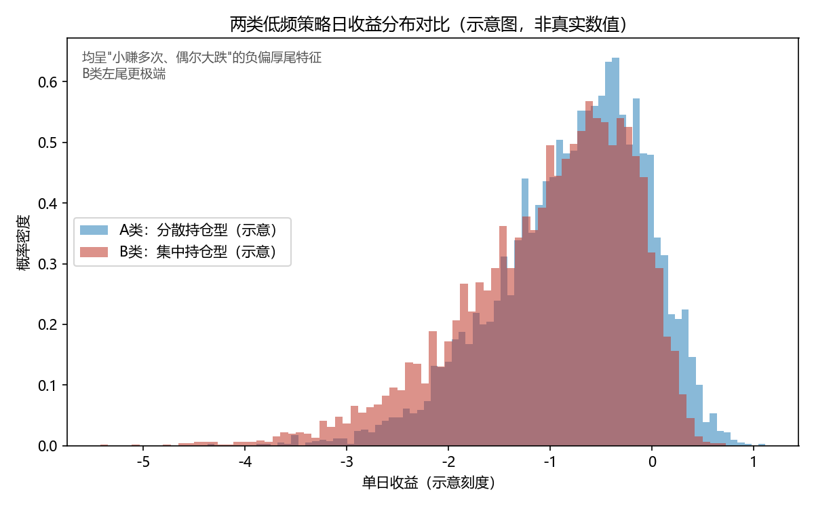
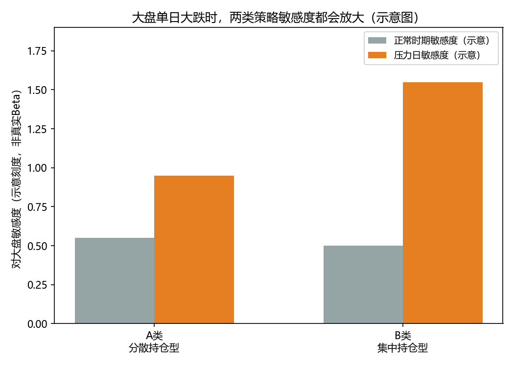
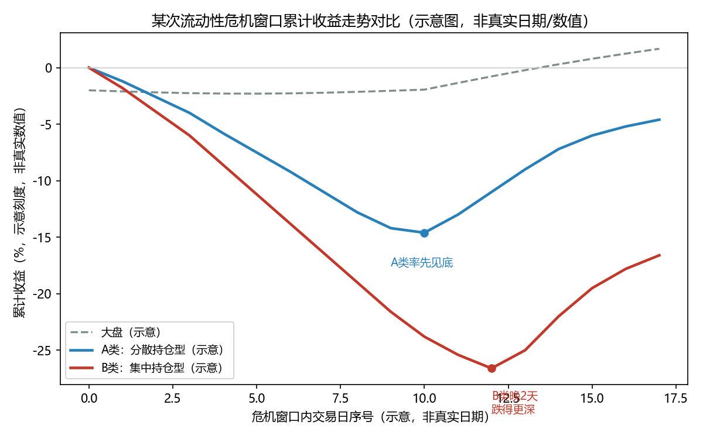

一次压力测试复盘
最近我用同一套压力测试框架，对比检验了两类风格完全不同的低频量化方法：
- A类：偏"低波动 + 行业分散持仓"
- B类：偏"高股息 + 相对集中持仓"
这两类策略在选股逻辑、持仓结构上几乎没有相似之处，我原本以为它们在极端行情下的表现也会大相径庭。结果发现：它们生的是同一种病，只是病情轻重不同。
这篇复盘不讲具体策略代号、不贴具体数字，只讲我发现的现象和背后的方法论——这也是我自己认为比"某个策略好不好"更值得记录的东西。
我是怎么测的
压力测试框架分四步走：
- 收益分布形态：看整体收益曲线是偏"温和震荡"还是"小赚多次、偶尔大跌"
- 压力日敏感度：单独挑出大盘单日暴跌的交易日，看策略在这些日子里对大盘的敏感度会不会异常放大
- 历史极端事件复盘：拿几次公开的市场极端事件（如流动性危机、系统性熔断）做逐一对照
- 持仓结构归因：如果某次事件里策略跌得特别深，回头看是不是持仓结构本身埋了雷
一个踩坑记录（纯工程教训，和策略无关）：做时间序列对齐时，如果某个历史事件的日期早于其中一个账户的数据起点，用最近邻映射（method='nearest'）取值会静默地把两个不同的事件映射到同一个交易日，产生"两件事同一天发生"的假象。正确做法是发现缺失区间后直接剔除该事件，不要用近似值顶替。这是纯粹的时间序列处理陷阱，跟具体策略逻辑没关系，但很容易踩。
发现了什么
1. 收益分布：两者都是"卖保险"型结构，但程度不同
两类方法的收益分布都呈现"小赚多次、偶尔大跌"的负偏、厚尾特征——这是靠承担尾部风险换取日常稳定收益的策略共性。其中偏分散持仓的那类，分布形态明显更温和；偏集中持仓的那类，左尾更极端。

示意图：用合成数据表达"两者都负偏厚尾、B类左尾更极端"这一相对关系，不还原任何真实统计数值
2. 压力日表现：敏感度都会放大，但放大幅度差很大
两类方法在大盘单日暴跌超过一定阈值时，对大盘的敏感度都会明显放大——这是共性；但集中持仓那类放大得更剧烈，说明它对系统性恐慌更脆弱。

示意图：柱高为相对刻度，不是真实Beta值，只体现"都放大、B类放大更多"这一结构性事实
3. 一次历史流动性危机复盘：分散持仓的修复更快
以一次典型的流动性危机为例，两类方法都出现了明显下跌，但走出低谷的时间点不一样：偏分散的那类跟随大盘企稳后很快修复；偏集中的那类多跌了一段时间，也晚了几天才见底。

示意图：横轴为危机窗口内的交易日序号而非真实日期，纵轴为示意刻度而非真实累计收益，仅保留"A类率先见底、B类跌更深且晚几天见底"这一相对形态
4. 根因：不是流动性机制，是行业暴露浓度
深挖之后发现，那次踩踏中集中持仓策略回撤更深，根因不是流动性机制本身，而是它的选股逻辑被动堆积了某个强周期行业的暴露。市场情绪一转向"衰退预期"，这个行业的股票就被集中砸盘；而分散持仓策略因为行业跨度更广，没有被单一叙事精准命中。
这也印证了我之前复盘另一策略时得到的教训：选股条件如果不对行业分布做约束，很容易在不知不觉中把整个组合押注到一两个强周期行业上，平时看不出问题，一旦遇到叙事切换（比如"衰退预期"这种宏观叙事），这些行业会被集中抛售，伤害远超预期。
5. 最大回撤：分散持仓明显更浅
极端行情下，分散持仓的方法最大回撤明显浅一些，且更早开始修复。
我的结论
- 两个基因完全不同的策略，在极端行情下犯的是同一种"病"：压力时期对大盘的敏感度会突然放大，只是程度不同。
- 根因是行业暴露浓度，不是流动性机制：谁的持仓在无意中堆积了单一强周期行业，谁在"衰退叙事"里就跌得更狠。
- 这提示我一件事：与其为每个策略单独设计"专属预警信号"，不如先建一个跨策略通用的"压力敏感度监控"——不管策略逻辑本身是什么，只要监控它在压力日的敏感度是否异常放大，可能是更省力也更普适的风控思路。
下一步想验证的
- "压力日敏感度放大"能不能做成一个跟具体策略逻辑无关、可以套用在任何策略上的通用监控指标
- 分散持仓的策略是不是也存在自己没发现的"隐藏周期行业暴露"，需要单独扫描
本文数据来自本人历史研究复盘，为保护策略细节，文中不涉及具体策略名称、具体持仓标的、精确数值和交易日期，配图均为合成示意数据，仅保留方法论和方向性结论，不还原任何真实回测/持仓数据。